You ask for six clusters, and you get six clusters, no matter if there are actually more clusters in the data, or even less.
Sometimes it is clear that the clusters you get are useless, that you are only clustering noise. You can see this in the map below:
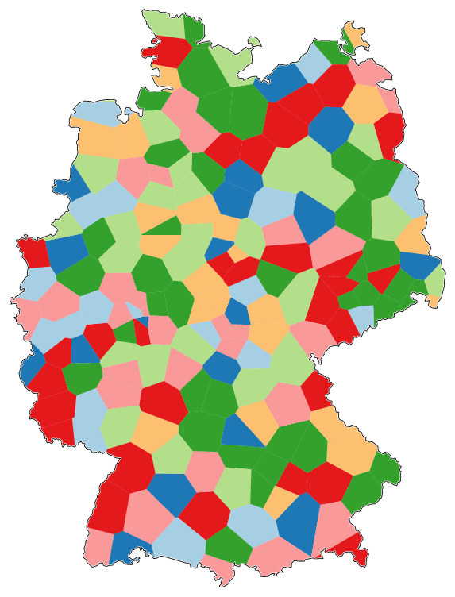
But usually, the result looks quite acceptable, like in the following map:
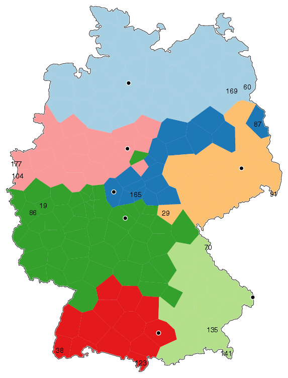
What you get not only depends on how many clusters you ask for. Different clustering methods give different results. And clustering is highly sensitive to small amounts of noise. Furthermore, you can't see the difference between major and minor cluster devisions. (Even dendrograms, that suggest a hierarchy, are not realiable in this respect.)
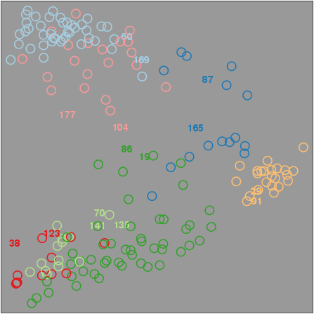
You can see a clear devision between north and south. This plot also shows that the dark blue cluster seems to belong partly to the north group and partly to the south group. So this colour actually is not a single cluster.
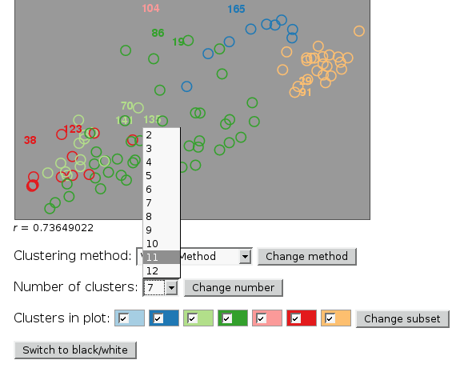
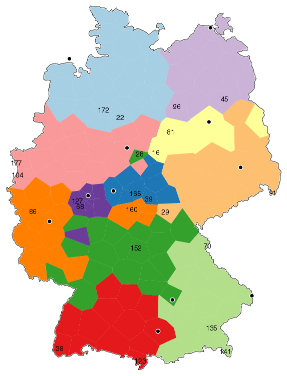
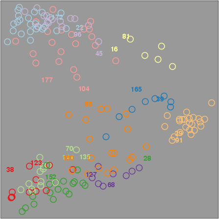
The previous dark blue cluster is now split in two, a yellow cluster that belongs to the north, and a dark blue cluster that belongs to the south.
First, let's have a closer look at the north. We remove all clusters from the south from the plot:
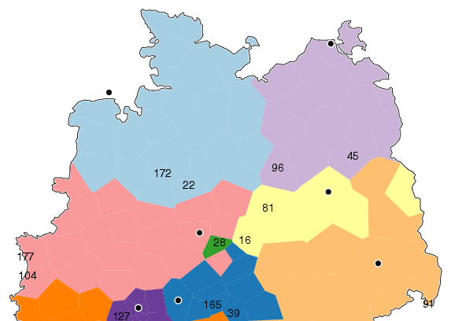
This gives MDS the chance to redistribute a smaller part of the data, giving more room to clusters in the data to separate themselves. Indeed, colours that in the previous plot looked jumbled now appear spatially ordered:
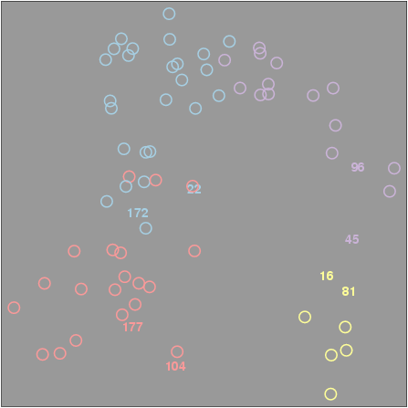
However, are these really four distinct clusters?
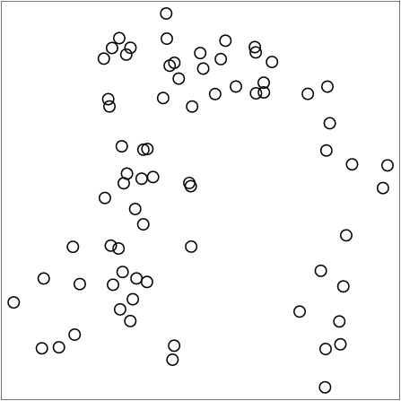
The cluster that was yellow seems alright as a real cluster, but it is not possible to point to a distinct cluster in the other parts of the plot.
So, what is happening here?
It seems (based on the data) that the north is not a region of separate dialects, but a continuum, with language changing gradually over distance. Pink is clearly at the west as one end of the continuum, and yellow is the other end in the east. But borders within this continuum are arbitrary, especially between pink and light blue, and between light blue and light purple.
So we make an MDS plot with data from the north omitted:
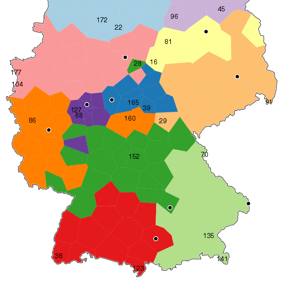
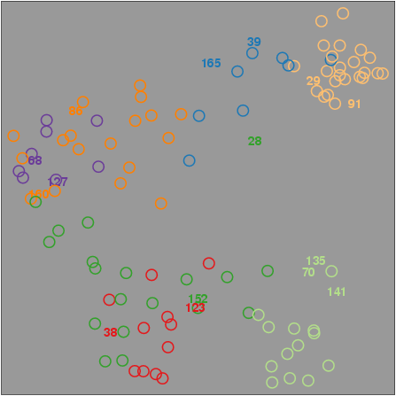
This shows another two major groups. One in the middle of Germany with dark and light orange, dark purple and dark blue. And the other group in southern Germany with red and dark and light green.
The location marked "28" is one of the exceptional locations in the dark green cluster, as you can see in both map and MDS plot. It doesn't belong to the south. The clustering algorithm got it wrong.
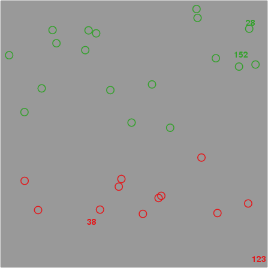
Red and green are no longer mixed, but the spatial distribution suggests there is no real cluster border. (Imagine this plot without colours.) So this is probably an area with a gradual dialect transition from north to south.
A few words of caution.
MDS is much more stable than clustering, but it isn't perfect either.
The results you get are only as good as your data. You may miss dialects because the data isn't detailed enough. You may also see clusters that don't correspond to dialects, but to some artifact in the data, for instance, multiple fieldworkers, or tiny variations in the manner of data gathering, that show only in the final analysis.